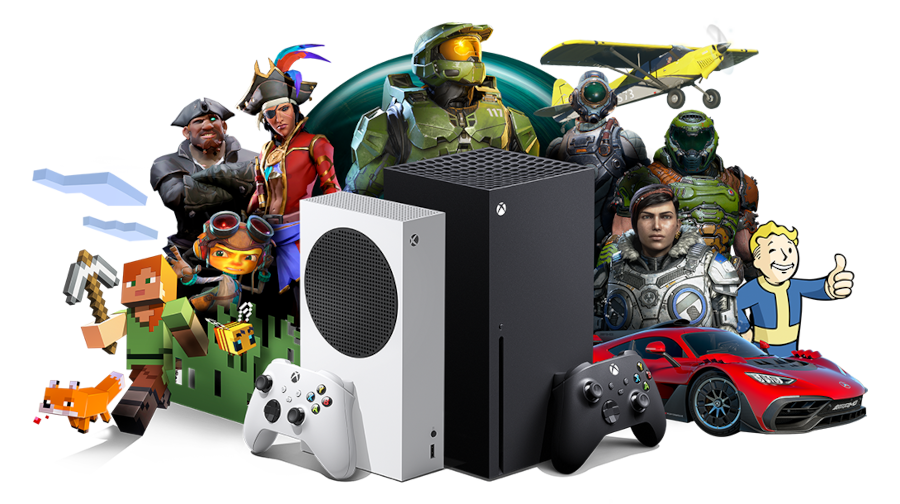

Eleve seu jogo para o próximo nível.
Uma imersão sem igual, proporcionada pelo ecossistema xbox que foi criando pensando em você.
No seu Smartphone
Você pode pode reproduzir seu jogo diretamente no seu smartphone. Continue jogando, mesmo sem um monitor.
Interação com seu PC
Todo progresso de jogo feito em seu computador, também estará disponível automaticamente em seu novo console.
Uma nova experiência
Com novas tecnologias embarcadas, a nova geração te aguarda. Menos loadings, mais fluidez e os melhores gráficos que você vai experimentar.
Minimalismo e charme do menor Xbox já feito
Mas não se engane, esse pequeno console é capaz de rodar os seus jogos preferidos com até 120 frames, garantindo uma fluidez excelente. Possuí também um SSD de alta velocidade pra você aproveitar mais o seu game.
Simplesmente o console mais poderoso da atualidade
Com o Xbox Series X você poderá disfrutar do melhor que há, 4K, 120 frames, Ray Tracing. Aliado a enorme biblioteca de jogos otimizados para o console, é a melhor experiência disponível no mercado.